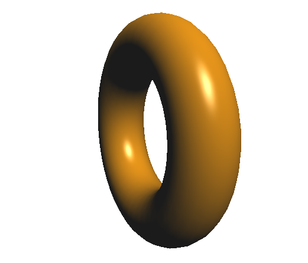

目次
FirefoxとChrome以外での動作は確認していません。
IEは確実に無理です。
IEは確実に無理です。
基本的なもの
- WebGLテンプレート 
- テクスチャ
- 材質の設定詰め合わせ
- キューブマッピング
- キーボードイベント
キーボードによるインタラクション。
- マウスイベント マウスによるインタラクション。
- 文字列表示1
・パターン2
・パターン3 - シャドーマッピング
- obj読み込み objデータを読み込んで表示する。
- Blender読み込み
- パーティクル・システム
- 動画テクスチャ テクスチャに動画を設定する。
- セグメンテーション
- Blenderアニメーション
- 物理演算
ただオブジェクト描画してカメラ回せるようにしたもの。
ここから色々付け足す。

ボタンを付けてインタラクティブに。
Javascriptだとインターフェイス作るのが楽。
Ver 2.0
Ver 3.0
dat.guiとの組み合わせ。
だいぶ細かくパラメータ操作できるようにした。

キューブの各面に異なるテクスチャを貼る。
OpenGLだとこれが普通だけど、WebGLだと知らなきゃわからない。

色々な文字列の表示のしかた。
影を生じさせる。
objの書き方によっては上手く表示されない。
Blenderでモデリングしたデータを読み込んで表示する。
複雑なモデルをWebGLで作るのは難しいので便利。
ある規則に従ってランダムに物体を配置する。
面を分割して使う。
Blenderで作成したアニメーションを読み込んで表示する。
物理演算用のライブラリを使ってみた。
応用的なもの
- 太陽系モデル ・修正版
- 衝突判定の実装 ・迷路もどき
- キューブマッピング（追加版）
- 物理シミュレーション1
- ランダム地形生成
- マウスイベント応用 ・ホームページっぽいもの1
- 詰め込み第二弾
- 波動シミュレーション
- 3Dダンジョン
- Tweenアニメーション使ったゲーム
- 球面調和関数を描画
太陽系モデルのシミュレーション。
サイズの問題上、太陽のスケールだけ適当。
衝突判定を付けた＆応用して迷路を作った。
ソースコード的には微妙な出来

キューブマッピングのバリエーションを増やしたもの。
微分方程式をRunge-Kutta法で数値的に解いてグラフを描画。
複雑系とかカオス力学とか
起伏のある地形をランダムで生成

ホームページをそのまま3Dにしたようなインターフェイス
・ホームページっぽいもの2
キューブの各面にリンクを貼る。
3Dならではなインターフェイスでオサレ
・ゲームっぽいもの
タッチザナンバーのパクリゲー

今までのもの（左列のBlender読み込みまで）を詰め込んだもの＋α。
色々使いまわせるテンプレートを作ろうと思ったらそこそこの大作になった。


波動方程式を解いて描画
粒子版 半球版
Wizや世界樹の迷宮みたいな3Dダンジョン。
↓を作ったついでにTweenで移動・回転モーションを追加

アニメーション用ライブラリのTweenを使って簡単なゲーム。
これだけだとあまり意味無いけど、これを使って色々出来るらしい。